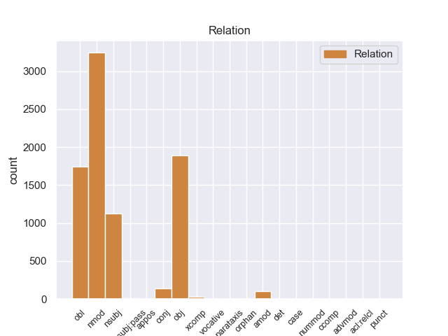
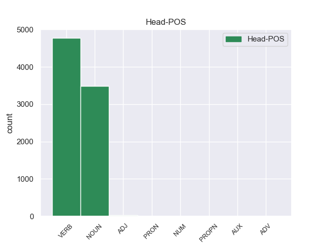

Distribution of features within this leaf



Agreement Rules sorted by frequency.
- When the dependent token is the nominal modifier(nmod) of the head token, and the dependent token is NOUN.
1 Αυτό _ _ _ _ 0 _ _ _
2 μπορεί _ _ _ _ 0 _ _ _
3 να _ _ _ _ 0 _ _ _
4 μην _ _ _ _ 0 _ _ _
5 οδηγήσει _ _ _ _ 0 _ _ _
6 σ _ _ _ _ 0 _ _ _
7 τη _ _ _ _ 0 _ _ _
8 λήξη _ _ _ _ 0 _ _ _
9 του _ _ _ _ 0 _ _ _
10 εν _ _ _ _ 0 _ _ _
11 λόγω _ _ _ _ 0 _ _ _
12 ζητήματος _ _ _ _ 0 _ _ _
13 αλλά _ _ _ _ 0 _ _ _
14 , _ _ _ _ 0 _ _ _
15 σ _ _ _ _ 0 _ _ _
16 τη _ _ _ _ 0 _ _ _
17 μορφή _ _ _ _ 0 _ _ _
18 υπό _ _ _ _ 0 _ _ _
19 την _ _ _ _ 0 _ _ _
20 οποία _ _ _ _ 0 _ _ _
21 την _ _ _ _ 0 _ _ _
22 λάβαμε _ _ _ _ 0 _ _ _
23 , _ _ _ _ 0 _ _ _
24 αυτή _ _ _ _ 0 _ _ _
25 η _ _ _ _ 0 _ _ _
26 αίτηση _ _ _ _ 0 _ _ _
27 άρσης _ _ _ _ 0 _ _ _
28 της _ _ _ _ 0 _ _ _
29 ασυλίας _ _ _ _ 0 _ _ _
30 ήταν _ _ _ _ 0 _ _ _
31 , _ _ _ _ 0 _ _ _
32 κατά _ _ _ _ 0 _ _ _
33 την _ _ _ _ 0 _ _ _
34 άποψη άποψη NOUN _ Case=Acc|Gender=Fem|Number=Sing 0 _ _ _
35 της _ _ _ _ 0 _ _ _
36 Επιτροπής _ _ _ _ 0 _ _ _
37 Νομικών _ _ _ _ 0 _ _ _
38 Θεμάτων θεμάτω NOUN _ Case=Gen|Gender=Fem|Number=Sing 34 nmod _ _
39 , _ _ _ _ 0 _ _ _
40 απαράδεκτη _ _ _ _ 0 _ _ _
41 , _ _ _ _ 0 _ _ _
42 άποψη _ _ _ _ 0 _ _ _
43 την _ _ _ _ 0 _ _ _
44 οποία _ _ _ _ 0 _ _ _
45 συνιστώ _ _ _ _ 0 _ _ _
46 σ _ _ _ _ 0 _ _ _
47 το _ _ _ _ 0 _ _ _
48 Σώμα _ _ _ _ 0 _ _ _
49 να _ _ _ _ 0 _ _ _
50 υιοθετήσει _ _ _ _ 0 _ _ _
51 . _ _ _ _ 0 _ _ _
1 Αυτό _ _ _ _ 0 _ _ _
2 μπορεί _ _ _ _ 0 _ _ _
3 να _ _ _ _ 0 _ _ _
4 μην _ _ _ _ 0 _ _ _
5 οδηγήσει οδηγήσει VERB _ Aspect=Imp|Mood=Ind|Number=Sing|Person=3|Tense=Pres|VerbForm=Fin|Voice=Act 0 _ _ _
6 σ _ _ _ _ 0 _ _ _
7 τη _ _ _ _ 0 _ _ _
8 λήξη _ _ _ _ 0 _ _ _
9 του _ _ _ _ 0 _ _ _
10 εν _ _ _ _ 0 _ _ _
11 λόγω _ _ _ _ 0 _ _ _
12 ζητήματος _ _ _ _ 0 _ _ _
13 αλλά _ _ _ _ 0 _ _ _
14 , _ _ _ _ 0 _ _ _
15 σ _ _ _ _ 0 _ _ _
16 τη _ _ _ _ 0 _ _ _
17 μορφή _ _ _ _ 0 _ _ _
18 υπό _ _ _ _ 0 _ _ _
19 την _ _ _ _ 0 _ _ _
20 οποία _ _ _ _ 0 _ _ _
21 την _ _ _ _ 0 _ _ _
22 λάβαμε _ _ _ _ 0 _ _ _
23 , _ _ _ _ 0 _ _ _
24 αυτή _ _ _ _ 0 _ _ _
25 η _ _ _ _ 0 _ _ _
26 αίτηση _ _ _ _ 0 _ _ _
27 άρσης _ _ _ _ 0 _ _ _
28 της _ _ _ _ 0 _ _ _
29 ασυλίας _ _ _ _ 0 _ _ _
30 ήταν _ _ _ _ 0 _ _ _
31 , _ _ _ _ 0 _ _ _
32 κατά _ _ _ _ 0 _ _ _
33 την _ _ _ _ 0 _ _ _
34 άποψη _ _ _ _ 0 _ _ _
35 της _ _ _ _ 0 _ _ _
36 Επιτροπής _ _ _ _ 0 _ _ _
37 Νομικών _ _ _ _ 0 _ _ _
38 Θεμάτων _ _ _ _ 0 _ _ _
39 , _ _ _ _ 0 _ _ _
40 απαράδεκτη _ _ _ _ 0 _ _ _
41 , _ _ _ _ 0 _ _ _
42 άποψη άποψη NOUN _ Case=Acc|Gender=Fem|Number=Sing 5 obj _ _
43 την _ _ _ _ 0 _ _ _
44 οποία _ _ _ _ 0 _ _ _
45 συνιστώ _ _ _ _ 0 _ _ _
46 σ _ _ _ _ 0 _ _ _
47 το _ _ _ _ 0 _ _ _
48 Σώμα _ _ _ _ 0 _ _ _
49 να _ _ _ _ 0 _ _ _
50 υιοθετήσει _ _ _ _ 0 _ _ _
51 . _ _ _ _ 0 _ _ _
1 Αυτό _ _ _ _ 0 _ _ _
2 μπορεί _ _ _ _ 0 _ _ _
3 να _ _ _ _ 0 _ _ _
4 μην _ _ _ _ 0 _ _ _
5 οδηγήσει _ _ _ _ 0 _ _ _
6 σ _ _ _ _ 0 _ _ _
7 τη _ _ _ _ 0 _ _ _
8 λήξη _ _ _ _ 0 _ _ _
9 του _ _ _ _ 0 _ _ _
10 εν _ _ _ _ 0 _ _ _
11 λόγω _ _ _ _ 0 _ _ _
12 ζητήματος _ _ _ _ 0 _ _ _
13 αλλά _ _ _ _ 0 _ _ _
14 , _ _ _ _ 0 _ _ _
15 σ _ _ _ _ 0 _ _ _
16 τη _ _ _ _ 0 _ _ _
17 μορφή _ _ _ _ 0 _ _ _
18 υπό _ _ _ _ 0 _ _ _
19 την _ _ _ _ 0 _ _ _
20 οποία _ _ _ _ 0 _ _ _
21 την _ _ _ _ 0 _ _ _
22 λάβαμε _ _ _ _ 0 _ _ _
23 , _ _ _ _ 0 _ _ _
24 αυτή _ _ _ _ 0 _ _ _
25 η _ _ _ _ 0 _ _ _
26 αίτηση _ _ _ _ 0 _ _ _
27 άρσης _ _ _ _ 0 _ _ _
28 της _ _ _ _ 0 _ _ _
29 ασυλίας _ _ _ _ 0 _ _ _
30 ήταν _ _ _ _ 0 _ _ _
31 , _ _ _ _ 0 _ _ _
32 κατά _ _ _ _ 0 _ _ _
33 την _ _ _ _ 0 _ _ _
34 άποψη _ _ _ _ 0 _ _ _
35 της _ _ _ _ 0 _ _ _
36 Επιτροπής _ _ _ _ 0 _ _ _
37 Νομικών _ _ _ _ 0 _ _ _
38 Θεμάτων _ _ _ _ 0 _ _ _
39 , _ _ _ _ 0 _ _ _
40 απαράδεκτη _ _ _ _ 0 _ _ _
41 , _ _ _ _ 0 _ _ _
42 άποψη _ _ _ _ 0 _ _ _
43 την _ _ _ _ 0 _ _ _
44 οποία _ _ _ _ 0 _ _ _
45 συνιστώ _ _ _ _ 0 _ _ _
46 σ _ _ _ _ 0 _ _ _
47 το _ _ _ _ 0 _ _ _
48 Σώμα σώμα NOUN _ Case=Acc|Gender=Neut|Number=Sing 50 obl _ _
49 να _ _ _ _ 0 _ _ _
50 υιοθετήσει υιοθετήσει VERB _ Aspect=Perf|Mood=Ind|Number=Sing|Person=3|VerbForm=Fin|Voice=Act 0 _ _ _
51 . _ _ _ _ 0 _ _ _
1 Ευελπιστώ _ _ _ _ 0 _ _ _
2 ότι _ _ _ _ 0 _ _ _
3 η _ _ _ _ 0 _ _ _
4 απόφαση απόφαση NOUN _ Case=Acc|Gender=Fem|Number=Sing 17 nsubj _ _
5 αυτή _ _ _ _ 0 _ _ _
6 , _ _ _ _ 0 _ _ _
7 συμπεριλαμβανομένης _ _ _ _ 0 _ _ _
8 και _ _ _ _ 0 _ _ _
9 της _ _ _ _ 0 _ _ _
10 αιτιολογικής _ _ _ _ 0 _ _ _
11 έκθεσης _ _ _ _ 0 _ _ _
12 που _ _ _ _ 0 _ _ _
13 την _ _ _ _ 0 _ _ _
14 συνοδεύει _ _ _ _ 0 _ _ _
15 , _ _ _ _ 0 _ _ _
16 θα _ _ _ _ 0 _ _ _
17 διαβιβαστεί διαβιβαστεί VERB _ Aspect=Imp|Mood=Ind|Number=Sing|Person=3|Tense=Pres|VerbForm=Fin|Voice=Act 0 _ _ _
18 σ _ _ _ _ 0 _ _ _
19 τις _ _ _ _ 0 _ _ _
20 γαλλικές _ _ _ _ 0 _ _ _
21 αρχές _ _ _ _ 0 _ _ _
22 , _ _ _ _ 0 _ _ _
23 εφόσον _ _ _ _ 0 _ _ _
24 υπερψηφιστεί _ _ _ _ 0 _ _ _
25 από _ _ _ _ 0 _ _ _
26 το _ _ _ _ 0 _ _ _
27 Κοινοβούλιο _ _ _ _ 0 _ _ _
28 . _ _ _ _ 0 _ _ _
1 Πρόκειται _ _ _ _ 0 _ _ _
2 για _ _ _ _ 0 _ _ _
3 την _ _ _ _ 0 _ _ _
4 πώληση _ _ _ _ 0 _ _ _
5 όπλων _ _ _ _ 0 _ _ _
6 σε _ _ _ _ 0 _ _ _
7 ορισμένες _ _ _ _ 0 _ _ _
8 αφρικανικές _ _ _ _ 0 _ _ _
9 χώρες _ _ _ _ 0 _ _ _
10 , _ _ _ _ 0 _ _ _
11 κατά _ _ _ _ 0 _ _ _
12 παράβαση _ _ _ _ 0 _ _ _
13 της _ _ _ _ 0 _ _ _
14 γαλλικής _ _ _ _ 0 _ _ _
15 νομοθεσίας _ _ _ _ 0 _ _ _
16 περί _ _ _ _ 0 _ _ _
17 εμπορίου _ _ _ _ 0 _ _ _
18 όπλων _ _ _ _ 0 _ _ _
19 , _ _ _ _ 0 _ _ _
20 από _ _ _ _ 0 _ _ _
21 εταιρείες _ _ _ _ 0 _ _ _
22 μέσω _ _ _ _ 0 _ _ _
23 των _ _ _ _ 0 _ _ _
24 οποίων _ _ _ _ 0 _ _ _
25 πραγματοποιήθηκαν _ _ _ _ 0 _ _ _
26 αναρίθμητες _ _ _ _ 0 _ _ _
27 μεταφορές μεταφορές NOUN _ Case=Acc|Gender=Fem|Number=Plur 0 _ _ _
28 ποσών _ _ _ _ 0 _ _ _
29 ή _ _ _ _ 0 _ _ _
30 ακόμα _ _ _ _ 0 _ _ _
31 και _ _ _ _ 0 _ _ _
32 πληρωμές πληρωμές NOUN _ Case=Nom|Gender=Fem|Number=Plur 27 conj _ _
33 σε _ _ _ _ 0 _ _ _
34 ρευστό _ _ _ _ 0 _ _ _
35 , _ _ _ _ 0 _ _ _
36 σε _ _ _ _ 0 _ _ _
37 μια _ _ _ _ 0 _ _ _
38 σειρά _ _ _ _ 0 _ _ _
39 διαφόρων _ _ _ _ 0 _ _ _
40 προσώπων _ _ _ _ 0 _ _ _
41 . _ _ _ _ 0 _ _ _
1 Ο _ _ _ _ 0 _ _ _
2 ηγέτης _ _ _ _ 0 _ _ _
3 του _ _ _ _ 0 _ _ _
4 Μετώπου _ _ _ _ 0 _ _ _
5 της _ _ _ _ 0 _ _ _
6 Αριστεράς _ _ _ _ 0 _ _ _
7 , _ _ _ _ 0 _ _ _
8 Σεργκέι _ _ _ _ 0 _ _ _
9 Ουνταλτσόφ _ _ _ _ 0 _ _ _
10 , _ _ _ _ 0 _ _ _
11 ο _ _ _ _ 0 _ _ _
12 οποίος _ _ _ _ 0 _ _ _
13 είχε _ _ _ _ 0 _ _ _
14 συλληφθεί _ _ _ _ 0 _ _ _
15 κατά _ _ _ _ 0 _ _ _
16 τη _ _ _ _ 0 _ _ _
17 διάρκεια διάρκεια NOUN _ Case=Acc|Gender=Fem|Number=Sing 19 amod _ _
18 αντικυβερνητικών _ _ _ _ 0 _ _ _
19 διαδηλώσεων διαδηλώσεων NOUN _ Case=Gen|Gender=Fem|Number=Sing 0 _ _ _
20 , _ _ _ _ 0 _ _ _
21 αφέθηκε _ _ _ _ 0 _ _ _
22 ελεύθερος _ _ _ _ 0 _ _ _
23 με _ _ _ _ 0 _ _ _
24 πρόστιμο _ _ _ _ 0 _ _ _
25 χίλιων _ _ _ _ 0 _ _ _
26 ρούβλιων _ _ _ _ 0 _ _ _
27 . _ _ _ _ 0 _ _ _
1 Είναι _ _ _ _ 0 _ _ _
2 σημαντικό _ _ _ _ 0 _ _ _
3 να _ _ _ _ 0 _ _ _
4 υπογραμμίσω _ _ _ _ 0 _ _ _
5 το _ _ _ _ 0 _ _ _
6 γεγονός _ _ _ _ 0 _ _ _
7 ότι _ _ _ _ 0 _ _ _
8 και _ _ _ _ 0 _ _ _
9 οι _ _ _ _ 0 _ _ _
10 δύο _ _ _ _ 0 _ _ _
11 βουλευτές _ _ _ _ 0 _ _ _
12 διατρανώνουν _ _ _ _ 0 _ _ _
13 σθεναρά _ _ _ _ 0 _ _ _
14 την _ _ _ _ 0 _ _ _
15 αθωότητά _ _ _ _ 0 _ _ _
16 τους _ _ _ _ 0 _ _ _
17 και _ _ _ _ 0 _ _ _
18 καταγγέλλουν _ _ _ _ 0 _ _ _
19 αυτό _ _ _ _ 0 _ _ _
20 που _ _ _ _ 0 _ _ _
21 οι _ _ _ _ 0 _ _ _
22 ίδιοι _ _ _ _ 0 _ _ _
23 θεωρούν θεωρούν VERB _ Aspect=Imp|Mood=Ind|Number=Plur|Person=3|Tense=Pres|VerbForm=Fin|Voice=Pass 0 _ _ _
24 καταχρήσεις καταχρήσεις NOUN _ Case=Nom|Gender=Fem|Number=Plur 23 xcomp _ _
25 σ _ _ _ _ 0 _ _ _
26 τη _ _ _ _ 0 _ _ _
27 διαδικασία _ _ _ _ 0 _ _ _
28 δίωξης _ _ _ _ 0 _ _ _
29 . _ _ _ _ 0 _ _ _
1 Σύμφωνα _ _ _ _ 0 _ _ _
2 με _ _ _ _ 0 _ _ _
3 έρευνες _ _ _ _ 0 _ _ _
4 , _ _ _ _ 0 _ _ _
5 σ _ _ _ _ 0 _ _ _
6 τη _ _ _ _ 0 _ _ _
7 Ρωσία _ _ _ _ 0 _ _ _
8 ο _ _ _ _ 0 _ _ _
9 ένας _ _ _ _ 0 _ _ _
10 σ _ _ _ _ 0 _ _ _
11 τους _ _ _ _ 0 _ _ _
12 πέντε _ _ _ _ 0 _ _ _
13 ανθρώπους _ _ _ _ 0 _ _ _
14 κάτω _ _ _ _ 0 _ _ _
15 των _ _ _ _ 0 _ _ _
16 20 _ _ _ _ 0 _ _ _
17 ετών _ _ _ _ 0 _ _ _
18 προτιμά _ _ _ _ 0 _ _ _
19 να _ _ _ _ 0 _ _ _
20 βάλει βάλει VERB _ Aspect=Perf|Mood=Ind|Number=Sing|Person=3|VerbForm=Fin|Voice=Act 0 _ _ _
21 τέλος _ _ _ _ 0 _ _ _
22 σ _ _ _ _ 0 _ _ _
23 τη _ _ _ _ 0 _ _ _
24 ζωή _ _ _ _ 0 _ _ _
25 του _ _ _ _ 0 _ _ _
26 - _ _ _ _ 0 _ _ _
27 αριθμός αριθμός NOUN _ Case=Acc|Gender=Neut|Number=Sing 20 nsubj:pass _ _
28 τριπλάσιος _ _ _ _ 0 _ _ _
29 απ' _ _ _ _ 0 _ _ _
30 αυτόν _ _ _ _ 0 _ _ _
31 που _ _ _ _ 0 _ _ _
32 παρουσιάζουν _ _ _ _ 0 _ _ _
33 οι _ _ _ _ 0 _ _ _
34 ΗΠΑ _ _ _ _ 0 _ _ _
35 . _ _ _ _ 0 _ _ _
1 Σύμφωνα _ _ _ _ 0 _ _ _
2 με _ _ _ _ 0 _ _ _
3 το _ _ _ _ 0 _ _ _
4 άρθρο _ _ _ _ 0 _ _ _
5 10 _ _ _ _ 0 _ _ _
6 του _ _ _ _ 0 _ _ _
7 Πρωτοκόλλου _ _ _ _ 0 _ _ _
8 του _ _ _ _ 0 _ _ _
9 1965 _ _ _ _ 0 _ _ _
10 , _ _ _ _ 0 _ _ _
11 δεν _ _ _ _ 0 _ _ _
12 υφίσταται _ _ _ _ 0 _ _ _
13 σχετική _ _ _ _ 0 _ _ _
14 ασυλία _ _ _ _ 0 _ _ _
15 για _ _ _ _ 0 _ _ _
16 βουλευτή _ _ _ _ 0 _ _ _
17 της _ _ _ _ 0 _ _ _
18 Γαλλικής _ _ _ _ 0 _ _ _
19 Εθνοσυνέλευσης _ _ _ _ 0 _ _ _
20 ή _ _ _ _ 0 _ _ _
21 , _ _ _ _ 0 _ _ _
22 κατά _ _ _ _ 0 _ _ _
23 συνέπεια _ _ _ _ 0 _ _ _
24 , _ _ _ _ 0 _ _ _
25 για _ _ _ _ 0 _ _ _
26 γάλλο _ _ _ _ 0 _ _ _
27 βουλευτή _ _ _ _ 0 _ _ _
28 του _ _ _ _ 0 _ _ _
29 Ευρωπαϊκού _ _ _ _ 0 _ _ _
30 Κοινοβουλίου _ _ _ _ 0 _ _ _
31 σε _ _ _ _ 0 _ _ _
32 περίπτωση περίπτωση NOUN _ Case=Acc|Gender=Fem|Number=Sing 33 det _ _
33 δίωξης δίωξης NOUN _ Case=Acc|Gender=Fem|Number=Sing 0 _ _ _
34 για _ _ _ _ 0 _ _ _
35 κατηγορίες _ _ _ _ 0 _ _ _
36 αυτού _ _ _ _ 0 _ _ _
37 του _ _ _ _ 0 _ _ _
38 είδους _ _ _ _ 0 _ _ _
39 . _ _ _ _ 0 _ _ _
1 Αναμένεται _ _ _ _ 0 _ _ _
2 ότι _ _ _ _ 0 _ _ _
3 οι _ _ _ _ 0 _ _ _
4 δύο _ _ _ _ 0 _ _ _
5 πρώτοι _ _ _ _ 0 _ _ _
6 θα _ _ _ _ 0 _ _ _
7 αναγκαστούν _ _ _ _ 0 _ _ _
8 να _ _ _ _ 0 _ _ _
9 πληρώσουν _ _ _ _ 0 _ _ _
10 πρόστιμο _ _ _ _ 0 _ _ _
11 δύο _ _ _ _ 0 _ _ _
12 χιλιάδων χιλιάδων NOUN _ Case=Acc|Gender=Masc|Number=Plur 13 nummod _ _
13 ρουβλίων ρουβλίων NOUN _ Case=Acc|Gender=Fem|Number=Plur 0 _ _ _
14 , _ _ _ _ 0 _ _ _
15 ενώ _ _ _ _ 0 _ _ _
16 ο _ _ _ _ 0 _ _ _
17 τρίτος _ _ _ _ 0 _ _ _
18 αναμένεται _ _ _ _ 0 _ _ _
19 να _ _ _ _ 0 _ _ _
20 καταδικαστεί _ _ _ _ 0 _ _ _
21 σε _ _ _ _ 0 _ _ _
22 δεκαπέντε _ _ _ _ 0 _ _ _
23 ημέρες _ _ _ _ 0 _ _ _
24 φυλάκισης _ _ _ _ 0 _ _ _
25 . _ _ _ _ 0 _ _ _
1 Όλοι _ _ _ _ 0 _ _ _
2 οι _ _ _ _ 0 _ _ _
3 κρατούμενοι _ _ _ _ 0 _ _ _
4 φέρονται φέρονται VERB _ Aspect=Imp|Mood=Ind|Number=Plur|Person=3|Tense=Pres|VerbForm=Fin|Voice=Act 0 _ _ _
5 ως _ _ _ _ 0 _ _ _
6 μέλη _ _ _ _ 0 _ _ _
7 της _ _ _ _ 0 _ _ _
8 Αλ _ _ _ _ 0 _ _ _
9 Κάιντα _ _ _ _ 0 _ _ _
10 , _ _ _ _ 0 _ _ _
11 ενώ _ _ _ _ 0 _ _ _
12 δύο _ _ _ _ 0 _ _ _
13 απ' _ _ _ _ 0 _ _ _
14 αυτούς _ _ _ _ 0 _ _ _
15 είναι _ _ _ _ 0 _ _ _
16 θανατοποινίτες θανατοποινίτες NOUN _ Case=Nom|Gender=Masc|Number=Plur 4 ccomp _ _
17 . _ _ _ _ 0 _ _ _
1 Οι _ _ _ _ 0 _ _ _
2 Αρχές _ _ _ _ 0 _ _ _
3 της _ _ _ _ 0 _ _ _
4 Μισουράτας Μισουράτας PROPN PROPN Case=Gen|Gender=Fem|Number=Sing 0 _ _ _
5 ( _ _ _ _ 0 _ _ _
6 ή _ _ _ _ 0 _ _ _
7 Μισράτας _ _ _ _ 0 _ _ _
8 ) _ _ _ _ 0 _ _ _
9 , _ _ _ _ 0 _ _ _
10 της _ _ _ _ 0 _ _ _
11 τρίτης _ _ _ _ 0 _ _ _
12 μεγαλύτερης _ _ _ _ 0 _ _ _
13 πόλης πόλη NOUN NOUN Case=Gen|Gender=Fem|Number=Sing 4 appos _ _
14 σ _ _ _ _ 0 _ _ _
15 τη _ _ _ _ 0 _ _ _
16 Λιβύη _ _ _ _ 0 _ _ _
17 , _ _ _ _ 0 _ _ _
18 εξέφρασαν _ _ _ _ 0 _ _ _
19 την _ _ _ _ 0 _ _ _
20 επιθυμία _ _ _ _ 0 _ _ _
21 τους _ _ _ _ 0 _ _ _
22 για _ _ _ _ 0 _ _ _
23 καθεστώς _ _ _ _ 0 _ _ _
24 ημιαυτονομίας _ _ _ _ 0 _ _ _
25 . _ _ _ _ 0 _ _ _
1 Κατά _ _ _ _ 0 _ _ _
2 συνέπεια συνέπεια NOUN _ Case=Acc|Gender=Fem|Number=Sing 5 advmod _ _
3 , _ _ _ _ 0 _ _ _
4 είναι _ _ _ _ 0 _ _ _
5 θεμελιώδες θεμελιώδες VERB _ Aspect=Imp|Mood=Ind|Number=Sing|Person=3|Tense=Pres|VerbForm=Fin|Voice=Act 0 _ _ _
6 για _ _ _ _ 0 _ _ _
7 τα _ _ _ _ 0 _ _ _
8 κράτη _ _ _ _ 0 _ _ _
9 μέλη _ _ _ _ 0 _ _ _
10 να _ _ _ _ 0 _ _ _
11 προβούν _ _ _ _ 0 _ _ _
12 σ _ _ _ _ 0 _ _ _
13 τους _ _ _ _ 0 _ _ _
14 απαραίτητους _ _ _ _ 0 _ _ _
15 ελέγχους _ _ _ _ 0 _ _ _
16 προκειμένου _ _ _ _ 0 _ _ _
17 να _ _ _ _ 0 _ _ _
18 διασφαλίσουν _ _ _ _ 0 _ _ _
19 την _ _ _ _ 0 _ _ _
20 τήρηση _ _ _ _ 0 _ _ _
21 της _ _ _ _ 0 _ _ _
22 νέας _ _ _ _ 0 _ _ _
23 νομοθεσίας _ _ _ _ 0 _ _ _
24 . _ _ _ _ 0 _ _ _
1 Η _ _ _ _ 0 _ _ _
2 σημερινή _ _ _ _ 0 _ _ _
3 μέρα _ _ _ _ 0 _ _ _
4 σ _ _ _ _ 0 _ _ _
5 το _ _ _ _ 0 _ _ _
6 Βέλγιο _ _ _ _ 0 _ _ _
7 είναι _ _ _ _ 0 _ _ _
8 ημέρα _ _ _ _ 0 _ _ _
9 πένθους _ _ _ _ 0 _ _ _
10 για _ _ _ _ 0 _ _ _
11 τα _ _ _ _ 0 _ _ _
12 θύματα θύματα NOUN _ Case=Acc|Gender=Masc|Number=Plur 0 _ _ _
13 ενός _ _ _ _ 0 _ _ _
14 αυτοκινητιστικού _ _ _ _ 0 _ _ _
15 δυστυχήματος _ _ _ _ 0 _ _ _
16 σε _ _ _ _ 0 _ _ _
17 τούνελ _ _ _ _ 0 _ _ _
18 της _ _ _ _ 0 _ _ _
19 Ελβετίας _ _ _ _ 0 _ _ _
20 , _ _ _ _ 0 _ _ _
21 του _ _ _ _ 0 _ _ _
22 οποίου _ _ _ _ 0 _ _ _
23 θύματα _ _ _ _ 0 _ _ _
24 ήταν _ _ _ _ 0 _ _ _
25 μαθητές μαθητές NOUN _ Case=Nom|Gender=Neut|Number=Plur 12 acl:relcl _ _
26 δύο _ _ _ _ 0 _ _ _
27 βελγικών _ _ _ _ 0 _ _ _
28 σχολείων _ _ _ _ 0 _ _ _
29 . _ _ _ _ 0 _ _ _
1 Κύριε _ _ _ _ 0 _ _ _
2 Πρόεδρε πρόεδρος NOUN NOUN Case=Voc|Gender=Masc|Number=Sing 4 vocative _ SpaceAfter=No
3 , _ _ _ _ 0 _ _ _
4 θέλω θέλω VERB VERB Aspect=Imp|Mood=Ind|Number=Sing|Person=1|Tense=Pres|VerbForm=Fin|Voice=Act 0 _ _ _
5 και _ _ _ _ 0 _ _ _
6 εγώ _ _ _ _ 0 _ _ _
7 , _ _ _ _ 0 _ _ _
8 όπως _ _ _ _ 0 _ _ _
9 οι _ _ _ _ 0 _ _ _
10 συνάδελφοι _ _ _ _ 0 _ _ _
11 μου _ _ _ _ 0 _ _ _
12 , _ _ _ _ 0 _ _ _
13 να _ _ _ _ 0 _ _ _
14 σας _ _ _ _ 0 _ _ _
15 συγχαρώ _ _ _ _ 0 _ _ _
16 για _ _ _ _ 0 _ _ _
17 την _ _ _ _ 0 _ _ _
18 επανεκλογή _ _ _ _ 0 _ _ _
19 σας _ _ _ _ 0 _ _ _
20 ως _ _ _ _ 0 _ _ _
21 Αντιπροέδρου _ _ _ _ 0 _ _ _
22 . _ _ _ _ 0 _ _ _
1 Πρέπει _ _ _ _ 0 _ _ _
2 να _ _ _ _ 0 _ _ _
3 δώσουμε δίνω VERB VERB Aspect=Perf|Mood=Ind|Number=Plur|Person=1|VerbForm=Fin|Voice=Act 0 _ _ _
4 μεγάλη _ _ _ _ 0 _ _ _
5 προσοχή _ _ _ _ 0 _ _ _
6 σ' _ _ _ _ 0 _ _ _
7 αυτό _ _ _ _ 0 _ _ _
8 . _ _ _ _ 0 _ _ _
9 ( _ _ _ _ 0 _ _ _
10 Χειροκροτήματα χειροκρότημα NOUN NOUN Case=Nom|Gender=Neut|Number=Plur 3 parataxis _ SpaceAfter=No
11 ) _ _ _ _ 0 _ _ _
1 Οι _ _ _ _ 0 _ _ _
2 ΗΠΑ _ _ _ _ 0 _ _ _
3 συμφώνησαν _ _ _ _ 0 _ _ _
4 να _ _ _ _ 0 _ _ _
5 βοηθήσουν _ _ _ _ 0 _ _ _
6 τη _ _ _ _ 0 _ _ _
7 Γαλλία _ _ _ _ 0 _ _ _
8 με _ _ _ _ 0 _ _ _
9 την _ _ _ _ 0 _ _ _
10 από από NOUN _ Case=Acc|Gender=Fem|Number=Sing 11 case _ _
11 αέρος αέρος NOUN _ Case=Acc|Gender=Fem|Number=Sing 0 _ _ _
12 μεταφορά _ _ _ _ 0 _ _ _
13 στρατιωτών _ _ _ _ 0 _ _ _
14 και _ _ _ _ 0 _ _ _
15 εξοπλισμού _ _ _ _ 0 _ _ _
16 σ _ _ _ _ 0 _ _ _
17 το _ _ _ _ 0 _ _ _
18 Μάλι _ _ _ _ 0 _ _ _
19 . _ _ _ _ 0 _ _ _
1 Εάν _ _ _ _ 0 _ _ _
2 έχω _ _ _ _ 0 _ _ _
3 να _ _ _ _ 0 _ _ _
4 κάνω _ _ _ _ 0 _ _ _
5 κάποια _ _ _ _ 0 _ _ _
6 κριτική _ _ _ _ 0 _ _ _
7 σ _ _ _ _ 0 _ _ _
8 την _ _ _ _ 0 _ _ _
9 ομιλία _ _ _ _ 0 _ _ _
10 σας _ _ _ _ 0 _ _ _
11 , _ _ _ _ 0 _ _ _
12 αυτή _ _ _ _ 0 _ _ _
13 δεν _ _ _ _ 0 _ _ _
14 αφορά _ _ _ _ 0 _ _ _
15 το _ _ _ _ 0 _ _ _
16 περιεχόμενο _ _ _ _ 0 _ _ _
17 - _ _ _ _ 0 _ _ _
18 ουσιαστικά _ _ _ _ 0 _ _ _
19 συμφωνώ _ _ _ _ 0 _ _ _
20 με _ _ _ _ 0 _ _ _
21 κάθε _ _ _ _ 0 _ _ _
22 σας _ _ _ _ 0 _ _ _
23 λέξη _ _ _ _ 0 _ _ _
24 - _ _ _ _ 0 _ _ _
25 αλλά _ _ _ _ 0 _ _ _
26 με _ _ _ _ 0 _ _ _
27 το _ _ _ _ 0 _ _ _
28 γεγονός _ _ _ _ 0 _ _ _
29 ότι _ _ _ _ 0 _ _ _
30 διέκρινα _ _ _ _ 0 _ _ _
31 , _ _ _ _ 0 _ _ _
32 ίσως _ _ _ _ 0 _ _ _
33 , _ _ _ _ 0 _ _ _
34 ένα _ _ _ _ 0 _ _ _
35 στοιχείο _ _ _ _ 0 _ _ _
36 εμμονής _ _ _ _ 0 _ _ _
37 σ _ _ _ _ 0 _ _ _
38 την _ _ _ _ 0 _ _ _
39 " " NOUN _ Case=Acc|Gender=Fem|Number=Sing 40 punct _ _
40 αποστολή αποστολή NOUN _ Case=Acc|Gender=Fem|Number=Sing 0 _ _ _
41 μας _ _ _ _ 0 _ _ _
42 " _ _ _ _ 0 _ _ _
43 . _ _ _ _ 0 _ _ _
Disagree Examples:
1 Χθες _ _ _ _ 0 _ _ _
2 , _ _ _ _ 0 _ _ _
3 η _ _ _ _ 0 _ _ _
4 Μάντσεστερ _ _ _ _ 0 _ _ _
5 Γιουνάιτεντ _ _ _ _ 0 _ _ _
6 ηττήθηκε ηττώμαι VERB VERB Aspect=Perf|Mood=Ind|Number=Sing|Person=3|Tense=Past|VerbForm=Fin|Voice=Pass 0 _ _ _
7 με _ _ _ _ 0 _ _ _
8 σκορ σκορ NOUN NOUN Case=Acc|Gender=Neut|Number=Plur 6 obl _ _
9 2:3 _ _ _ _ 0 _ _ _
10 από _ _ _ _ 0 _ _ _
11 την _ _ _ _ 0 _ _ _
12 Ατλέτικο _ _ _ _ 0 _ _ _
13 Μπιλμπάο _ _ _ _ 0 _ _ _
14 , _ _ _ _ 0 _ _ _
15 σ _ _ _ _ 0 _ _ _
16 τα _ _ _ _ 0 _ _ _
17 πλαίσια _ _ _ _ 0 _ _ _
18 της _ _ _ _ 0 _ _ _
19 φάσης _ _ _ _ 0 _ _ _
20 των _ _ _ _ 0 _ _ _
21 16 _ _ _ _ 0 _ _ _
22 του _ _ _ _ 0 _ _ _
23 Γιουρόπα _ _ _ _ 0 _ _ _
24 Λιγκ _ _ _ _ 0 _ _ _
25 2011-2012 _ _ _ _ 0 _ _ _
26 . _ _ _ _ 0 _ _ _
1 Χθες _ _ _ _ 0 _ _ _
2 , _ _ _ _ 0 _ _ _
3 η _ _ _ _ 0 _ _ _
4 Μάντσεστερ _ _ _ _ 0 _ _ _
5 Γιουνάιτεντ _ _ _ _ 0 _ _ _
6 ηττήθηκε ηττώμαι VERB VERB Aspect=Perf|Mood=Ind|Number=Sing|Person=3|Tense=Past|VerbForm=Fin|Voice=Pass 0 _ _ _
7 με _ _ _ _ 0 _ _ _
8 σκορ _ _ _ _ 0 _ _ _
9 2:3 _ _ _ _ 0 _ _ _
10 από _ _ _ _ 0 _ _ _
11 την _ _ _ _ 0 _ _ _
12 Ατλέτικο _ _ _ _ 0 _ _ _
13 Μπιλμπάο _ _ _ _ 0 _ _ _
14 , _ _ _ _ 0 _ _ _
15 σ _ _ _ _ 0 _ _ _
16 τα _ _ _ _ 0 _ _ _
17 πλαίσια πλαίσιο NOUN NOUN Case=Acc|Gender=Neut|Number=Plur 6 obl _ _
18 της _ _ _ _ 0 _ _ _
19 φάσης _ _ _ _ 0 _ _ _
20 των _ _ _ _ 0 _ _ _
21 16 _ _ _ _ 0 _ _ _
22 του _ _ _ _ 0 _ _ _
23 Γιουρόπα _ _ _ _ 0 _ _ _
24 Λιγκ _ _ _ _ 0 _ _ _
25 2011-2012 _ _ _ _ 0 _ _ _
26 . _ _ _ _ 0 _ _ _
1 Χθες _ _ _ _ 0 _ _ _
2 , _ _ _ _ 0 _ _ _
3 η _ _ _ _ 0 _ _ _
4 Μάντσεστερ _ _ _ _ 0 _ _ _
5 Γιουνάιτεντ _ _ _ _ 0 _ _ _
6 ηττήθηκε _ _ _ _ 0 _ _ _
7 με _ _ _ _ 0 _ _ _
8 σκορ _ _ _ _ 0 _ _ _
9 2:3 _ _ _ _ 0 _ _ _
10 από _ _ _ _ 0 _ _ _
11 την _ _ _ _ 0 _ _ _
12 Ατλέτικο _ _ _ _ 0 _ _ _
13 Μπιλμπάο _ _ _ _ 0 _ _ _
14 , _ _ _ _ 0 _ _ _
15 σ _ _ _ _ 0 _ _ _
16 τα _ _ _ _ 0 _ _ _
17 πλαίσια πλαίσιο NOUN NOUN Case=Acc|Gender=Neut|Number=Plur 0 _ _ _
18 της _ _ _ _ 0 _ _ _
19 φάσης φάση NOUN NOUN Case=Gen|Gender=Fem|Number=Sing 17 nmod _ _
20 των _ _ _ _ 0 _ _ _
21 16 _ _ _ _ 0 _ _ _
22 του _ _ _ _ 0 _ _ _
23 Γιουρόπα _ _ _ _ 0 _ _ _
24 Λιγκ _ _ _ _ 0 _ _ _
25 2011-2012 _ _ _ _ 0 _ _ _
26 . _ _ _ _ 0 _ _ _
1 Η _ _ _ _ 0 _ _ _
2 σημαντικότητα _ _ _ _ 0 _ _ _
3 του _ _ _ _ 0 _ _ _
4 Αχέροντα _ _ _ _ 0 _ _ _
5 ήταν _ _ _ _ 0 _ _ _
6 μεγάλη _ _ _ _ 0 _ _ _
7 κατά _ _ _ _ 0 _ _ _
8 την _ _ _ _ 0 _ _ _
9 αρχαιότητα _ _ _ _ 0 _ _ _
10 , _ _ _ _ 0 _ _ _
11 οπότε _ _ _ _ 0 _ _ _
12 και _ _ _ _ 0 _ _ _
13 ιδρύθηκε _ _ _ _ 0 _ _ _
14 σ _ _ _ _ 0 _ _ _
15 την _ _ _ _ 0 _ _ _
16 βορειοανατολική _ _ _ _ 0 _ _ _
17 όχθη _ _ _ _ 0 _ _ _
18 της _ _ _ _ 0 _ _ _
19 Αχερουσίας _ _ _ _ 0 _ _ _
20 το _ _ _ _ 0 _ _ _
21 Νεκρομαντείο _ _ _ _ 0 _ _ _
22 , _ _ _ _ 0 _ _ _
23 ο _ _ _ _ 0 _ _ _
24 σημαντικότερος _ _ _ _ 0 _ _ _
25 τόπος _ _ _ _ 0 _ _ _
26 επικοινωνίας _ _ _ _ 0 _ _ _
27 με _ _ _ _ 0 _ _ _
28 τους _ _ _ _ 0 _ _ _
29 νεκρούς _ _ _ _ 0 _ _ _
30 και _ _ _ _ 0 _ _ _
31 λατρείας λατρεία NOUN NOUN Case=Gen|Gender=Fem|Number=Sing 0 _ _ _
32 των _ _ _ _ 0 _ _ _
33 θεών θεός NOUN NOUN Case=Gen|Gender=Masc|Number=Plur 31 nmod _ _
34 του _ _ _ _ 0 _ _ _
35 Κάτω _ _ _ _ 0 _ _ _
36 Κόσμου _ _ _ _ 0 _ _ _
37 . _ _ _ _ 0 _ _ _
1 Η _ _ _ _ 0 _ _ _
2 σημαντικότητα _ _ _ _ 0 _ _ _
3 του _ _ _ _ 0 _ _ _
4 Αχέροντα _ _ _ _ 0 _ _ _
5 ήταν _ _ _ _ 0 _ _ _
6 μεγάλη _ _ _ _ 0 _ _ _
7 κατά _ _ _ _ 0 _ _ _
8 την _ _ _ _ 0 _ _ _
9 αρχαιότητα _ _ _ _ 0 _ _ _
10 , _ _ _ _ 0 _ _ _
11 οπότε _ _ _ _ 0 _ _ _
12 και _ _ _ _ 0 _ _ _
13 ιδρύθηκε _ _ _ _ 0 _ _ _
14 σ _ _ _ _ 0 _ _ _
15 την _ _ _ _ 0 _ _ _
16 βορειοανατολική _ _ _ _ 0 _ _ _
17 όχθη _ _ _ _ 0 _ _ _
18 της _ _ _ _ 0 _ _ _
19 Αχερουσίας _ _ _ _ 0 _ _ _
20 το _ _ _ _ 0 _ _ _
21 Νεκρομαντείο _ _ _ _ 0 _ _ _
22 , _ _ _ _ 0 _ _ _
23 ο _ _ _ _ 0 _ _ _
24 σημαντικότερος _ _ _ _ 0 _ _ _
25 τόπος _ _ _ _ 0 _ _ _
26 επικοινωνίας _ _ _ _ 0 _ _ _
27 με _ _ _ _ 0 _ _ _
28 τους _ _ _ _ 0 _ _ _
29 νεκρούς _ _ _ _ 0 _ _ _
30 και _ _ _ _ 0 _ _ _
31 λατρείας _ _ _ _ 0 _ _ _
32 των _ _ _ _ 0 _ _ _
33 θεών θεός NOUN NOUN Case=Gen|Gender=Masc|Number=Plur 0 _ _ _
34 του _ _ _ _ 0 _ _ _
35 Κάτω _ _ _ _ 0 _ _ _
36 Κόσμου κόσμος NOUN NOUN Case=Gen|Gender=Masc|Number=Sing 33 nmod _ SpaceAfter=No
37 . _ _ _ _ 0 _ _ _